Introduction to GRASS GIS and Scripting in GRASS using Python
FOSS4G-PH 2016 workshop (April 22, 2016)
MH 210, College of Engineering, University of the Philippines Diliman, Quezon City 1191
Ben Hur S. Pintor
https://github.com/benhur07b
benhur.07b@gmail.com


WORKSHOP: Clear-sky Solar Radiation using GRASS and r.sun
Software:- GRASS GIS 7 (7.0.3 LTS preferred)
- Region 03 SRTM DEM
- Region 03 Provinces shapefile
- Region 03 Linke turbidity csv
The Coordinate System to be used is WGS84 UTM Zone 51N (EPSG:32651)
The scripts in the Python tab can be used to run the commands in the Python shell but first you must import the Python Scripting Library using:
import grass.script as gscript
Running GRASS and setting up the LOCATION and MAPSET
grass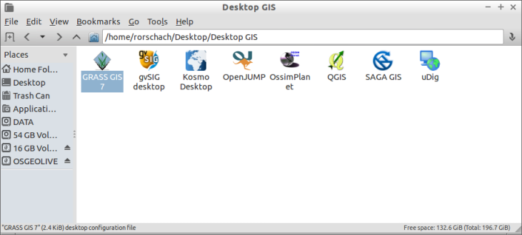
LOCATION
1. Create a NEW LOCATION
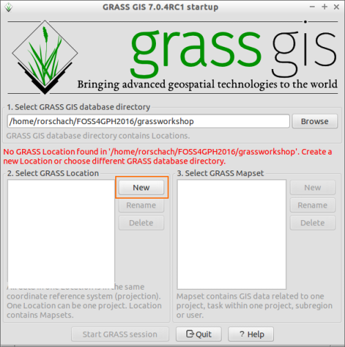
2. Name your LOCATION anything you want (ex. PHL-32651, PHL with UTM Zone 51N CRS)
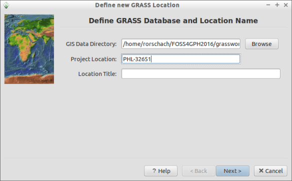
3. Select the first option (Select EPSG Code...)
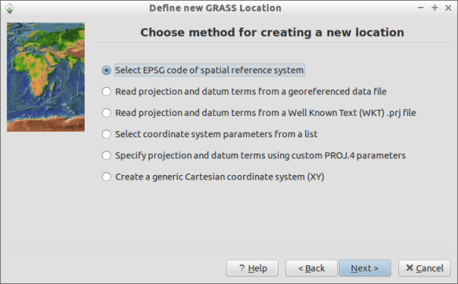
4. Input 32651 (WGS84 UTM Zone 51N)
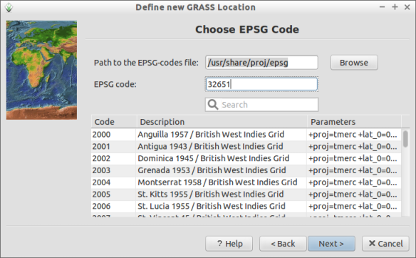
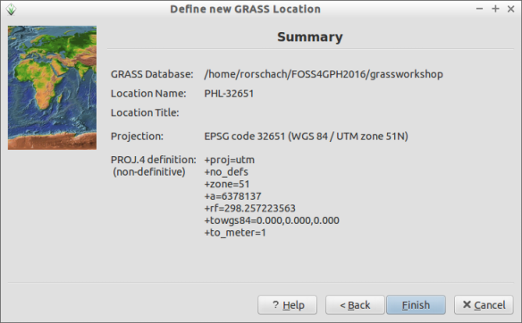
MAPSET
1. Create new MAPSET
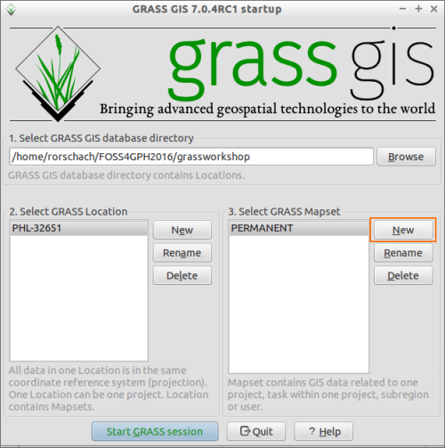
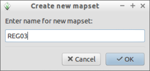
2. Start GRASS Session
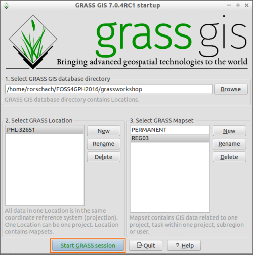
Creating and Editing a LOCATION and MAPSET can also be done within GRASS
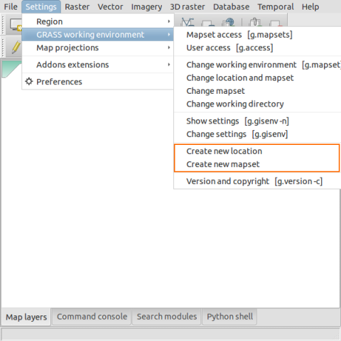
Pre-processing
Importing the elevation raster
r.in.gdal input=path/to/REG03_SRTM90.tif output=elev
Importing the provinces shapefile
v.in.ogr input=path/to/REG03_provinces.shp output=provinces
Importing the Linke csv to vector file
The Linke turbidity csv file is formatted as Latitude, Longitude, Linke for January. The Latitude and Longitude values are in WGS84.Convert Coordinates (m.proj)
In order to import the values as a vector in our LOCATION, we must first convert the Latitude and Longitude values to the LOCATION's Coordinate Reference System.
m.proj -i --verbose input=/path/to/REG03_Linke.csv output=/path/to/outputfile separator=comma
Importing a csv as vector (v.in.ascii)
We then import the output of m.proj using v.in.ascii.
v.in.ascii --verbose input=/path/to/REG03_Linke_proj.csv output=linke separator=comma columns="X DOUBLE PRECISION,Y DOUBLE PRECISION,Jan DOUBLE PRECISION"
Setting the Computational Region
Before doing any processing, especially for rasters, it is important to make sure that the computational region (extent and resolution) is correct.You can show the current computational region by:
g.region -ap
For our purpose, we need to set the computational region equal to that of the elevation raster. This can be done by:
g.region raster=elev@REG03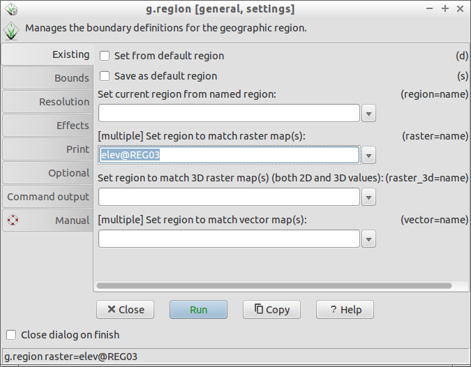
Or by right clicking on the layer and selecting
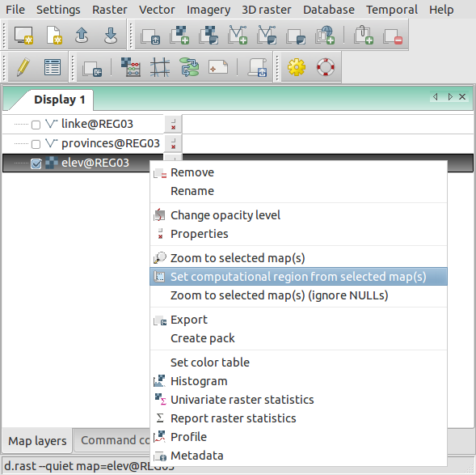
Processing
Slope and Aspect raster
Slope and aspect rasters can be computed using r.slope.aspect
r.slope.aspect elevation=elev slope=slope aspect=aspect
Horizon raster
Horizon rasters are computed using r.horizon.For quicker computations, set the computational region to 300 prior to computing the horizon rasters by using:
g.region res=300
Afterwards, the horizon rasters can be computed by:
r.horizon elevation=elev@REG03 step=15 output=horizon maxdistance=10000
Afterwards, make sure to set the computational region back to that of the elevation raster.
g.region rester=elev@REG03
Interpolating the Linke turbidity vector
Before interpolating the Linke turbidity vector, we must get the normalized Linke turbidity value using the formula: Ln = L + (0.00035 * elevation).Add columns to the attribute table (v.db.addcolumn)
The first step is to add columns to hold the elevation and normalized Linke values at the vector points.
v.db.addcolumn map=linke@REG03 columns="Elev DOUBLE PRECISION,Jan_norm DOUBLE PRECISION"
This can also be done by right clicking on the vector -> Show attribute data -> Manage Tables -> Add columns
Sample elevation values at the vector points (v.what.rast)
The next step is to get the elevation values at the vector points. This can be done by sampling the elevation raster at the vector points with v.what.rast.
v.what.rast map=linke@REG03 raster=elev@REG03 column=elev
Compute for the normalized Linke values (v.db.update)
The Jan_norm field can be updated using:
v.db.update --verbose map=linke@REG03 layer=1 column=Jan_norm query_column="Jan + (0.00035 * elev)"
Interpolating for the January Linke turbidity raster using Regularized Spline with Tension (v.surf.rst)
v.surf.rst --verbose input=linke@REG03 zcolumn=Jan_norm elevation=linke_Jan mask=elev@REG03 tension=100 smooth=0
Clear-sky solar radiation computations using r.sun
r.sun is a topography based solar radiation model implemented in GRASS GIS whose main inputs are an elevation raster and the Julian date. Here we will use r.sun to compute for the clear-sky GHI on January 1 of Region 3. The inputs that we will use are:- Elevation raster (elev)
- Slope raster (slope)
- Aspect raster (aspect)
- Normalized Linke turbidity raster (linke_Jan)
- Horizon rasters (horizon)
- Angle step = 15
- Julian date = 1 (January 1)
r.sun --verbose elevation=elev@REG03 aspect=aspect slope=slope linke=linke_Jan horizon_basename=horizon horizon_step=15 glob_rad=clear_GHI_001 day=1
Post-processing
Changing the colors of the raster (r.color)
Changing the color scheme of rasters can be done using r.color. Built-in color rules are provided but users can also create their own color rules.For example:
You can also save the color table to a file so that you can re-use it.
Getting the average solar radiation received by each province (v.rast.stats)
Zonal statistics like getting the average raster values inside a polygon can be done using v.rast.stats. Here, we want to compute for the average clear-sky solar radiation received by each province for the day (Jan 1).First we load the provinces vector into the Layer Manager. Then we use v.rast.stats to compute for the average GHI received by each province.
v.rast.stats --verbose map=provinces@REG03 raster=clear_GHI_001@REG03 column_prefix=ghi method=average
Changing the color of the province based on the solar radiation values (v.colors)
If the color change doesn't automatically reflect on the Map Window, try to refresh the display by zooming or panning.
Other common modules/operations
Raster Calculations (r.mapcalc)
Let's say we want to get the average of 2 rasters (clear_GHI_001, clear_GHI_002) and save it as clear_GHI_ave. We can use GRASS' r.mapcalc.
r.mapcalc "clear_GHI_ave = (clear_GHI_001@REG03 + clear_GHI_002@REG03)/2"
Removing data from the LOCATION (g.remove)
Make sure that you tick the force removal checkbox and select the data type.You use regular expressions or wildcards to remove multiple data with the same names.
g.remove
Resampling a raster (r.resamp.stats)
Before resampling a raster, you should first set the resolution of the computation region to that of the resolution you want to resample to. For example, if you want to resample from 90m to 300m, first set the resolution of the computation region to 300 by:
g.region res=300
Resampling is done using r.resamp.stats. This resamples the raster based on an aggregation method (e.g. average, median, mode, etc.) chosen by the user.
r.resamp.stats input=raster_to_be_resampled output=resampled_raster
Sitemap
Introduction | Raster Processing and Analysis | Vector Processing and Analysis | WORKSHOP 1 | WORKSHOP 2 (Scripting)